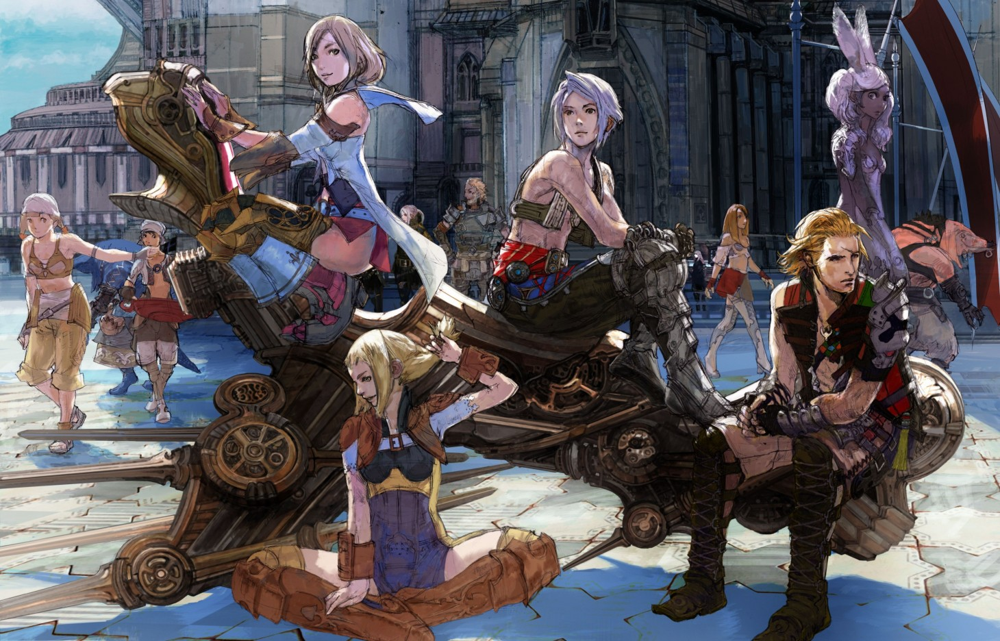
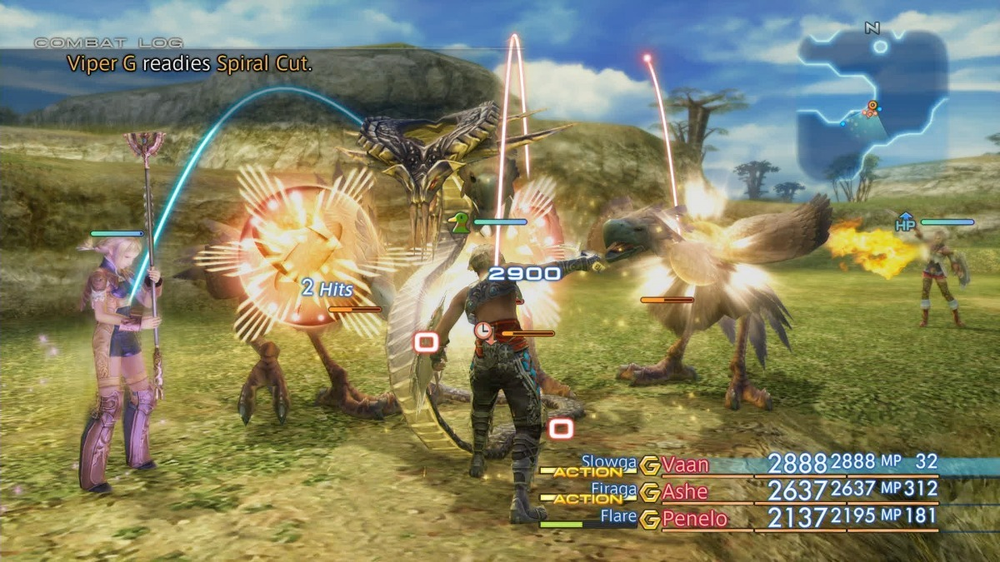

Final Fantasy XII The Zodiac Age
Final Fantasy XII passou cinco anos em desenvolvimento a partir de 2001 e finalmente foi lançado para o público norte-americano em outubro de 2006. O jogo foi lançado no PlayStation 2 e depois foi relançado no PlayStation 4 em julho de 2017 com gráficos atualizados , itens atualizados e um sistema de tarefas completamente redesenhado.

A versão relançada do jogo no PlayStation 4 foi intitulada "The Zodiac Age". Foi baseado na versão do jogo International Zodiac Job System, que foi desenvolvida e lançada no Japão muitos anos antes. Esta explicação foi atualizada e é baseada na versão Zodiac Age do jogo (que é muito mais divertida de jogar!).
Review
Final Fantasy XII se destaca entre os jogos de Final Fantasy, pois difere bastante das versões anteriores da série. Os gráficos e o mecanismo do jogo foram completamente refeitos, o sistema de combate é diferente de todos os jogos anteriores e o cenário se afasta das configurações de fantasia, como as de Final Fantasy VI, Final Fantasy VII e Final Fantasy IX.
A primeira coisa a observar sobre o jogo é o enorme salto em termos de gráficos e o novo estilo artístico que os desenvolvedores adotaram quando criaram o jogo. Embora seja muito diferente de Final Fantasy VII, VIII, IX e X, os jogadores que já jogaram Final Fantasy XI, que era um MMORPG também completamente diferente de qualquer outro jogo de Final Fantasy, perceberão as semelhanças nos designs de personagens e nas configurações.
O elenco de personagens de Final Fantasy XII é um dos mais fortes de todos os jogos de Final Fantasy até hoje. Não existem personagens ridículos e sem sentido, como Cait Sith (de Final Fantasy VII) ou Quina (de Final Fantasy IX). O elenco principal inclui Vaan, Balthier, Fran, Penelo, Basch e Ashe. O único personagem que não é humano (referido como "Hume" no jogo) é Fran, que é uma Viera e, embora os atributos de sua raça sejam muito semelhantes às raças élficas encontradas em outros jogos e literatura de fantasia, eles se encaixam bem dentro do cenário deste jogo.
O mundo de Ivalice foi visto em títulos anteriores de Final
Fantasy, incluindo Final Fantasy Tactics e Final Fantasy XII:
Revenant Wings. O cenário nas várias zonas parece fantástico e
funciona bem com a história, apesar de muitos fãs reclamarem que a
história é muito "política". Isso não me incomoda, pois eu
preferiria mais uma história politicamente estilizada do que uma
história mais orientada à fantasia, mas não funciona bem para
todos.
Outro aspecto altamente polarizador do jogo é o uso do sistema
Gambit, que permite ao jogador configurar ações específicas para
personagens que são concluídos apenas sob certas condições. Por
exemplo, você pode criar um Gambit que faz com que seu personagem
use automaticamente uma Poção em si ou em um membro do grupo
quando o HP dele cair abaixo de 50%.
The Gambit system allows you to build specific tactics around moves and focuses a lot of the strategic aspect of the game into the preparation before a battle rather than actions taken during the battle. It did not go over well with every player of the game but I found it to be both challenging and rewarding; especially once you start to master the basic concepts.

Este também é o primeiro jogo da série que removeu o aspecto de
encontrar inimigos aleatoriamente no campo de batalha e ser
forçado a lutar. Em vez disso, monstros e inimigos aparecem no
mundo inteiro e agora você pode passar por eles se quiser. Esse
estilo já foi repetido em muitos dos títulos mais recentes de
Final Fantasy da franquia (Final Fantasy XIII e XV, por exemplo) e
finalmente remove um dos aspectos mais irritantes e inevitáveis
dos jogos anteriores.
Este título não está isento de falhas; por exemplo, há problemas
de balanceamento com alguns dos caracteres. Na versão PlayStation
2 do jogo, Fran, Penelo e Balthier (em menor grau) estão com pouca
força e não faz sentido usá-los durante uma jogada. Muitos desses
problemas foram corrigidos nas versões atualizadas do jogo,
tornando todos os personagens úteis em determinadas situações e em
determinados trabalhos.
The game also suffers from problems with spell load times which
can cause noticeable problems during faster-paced battle
sequences. If you noticed this during you’re playthrough, don’t
assume that your PlayStation 2 is broken like I did! This is an
unavoidable issue that the game suffers from and that players will
have to suffer through while playing.
O jogo também emprega uma substituição estranha ao sistema Limit
Break / Trance / Overdrive: Quickenings. Pode levar algumas
tentativas para se acostumar com o Quickenings e para aprender a
encadear, o que aumenta muito o dano causado. Mas a aleatoriedade
de cisalhamento de poder pressionar os botões corretos em ordem e
o período de tempo em que a batalha é interrompida enquanto você
executa uma Cadeia de Quickening é extremamente prejudicial para a
experiência geral. As Correntes de Quickening podem ser usadas
para facilitar muitas das batalhas, mas eu as evitei completamente
durante minha primeira jogada devido à 'chatice' associada a
passar vários minutos olhando a tela de Quickening.
O sistema do Conselho de Licenças é um tanto único. Nos estágios
iniciais do jogo, ele oferece bastante personalização para cada um
dos seus personagens, mas isso tende a diminuir mais tarde no
jogo, pois todos os personagens começam a adquirir os mesmos
movimentos e magias. A Era do Zodíaco (assim como a versão do
International Zodiac Job System) resolve alguns desses problemas
adicionando classes de personagens que mudarão bastante a mecânica
por trás de uma jogada padrão. No geral, eu realmente gostei deste
jogo e o classificaria nos meus 3 melhores jogos de Final Fantasy
sem hesitar. Eu recomendo jogar a versão Zodiac Age, pois inclui
gráficos atualizados e você não precisa procurar um antigo
PlayStation 2 apenas para jogar (ou pior, ter que imitá-lo).
Definitivamente, incentivo todos os fãs de Final Fantasy a
experimentarem este jogo - 10/10.